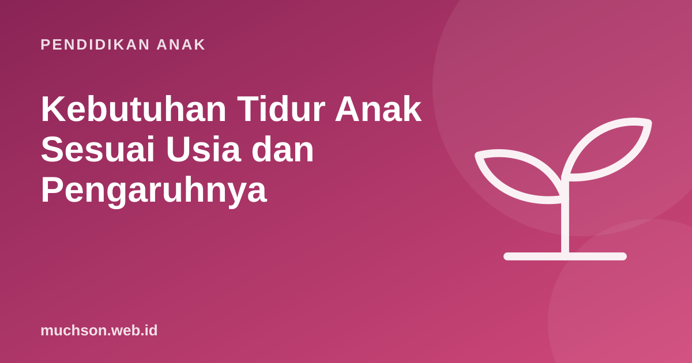

Beranda › Artikel › Pendidikan Anak
Pendidikan AnakKebutuhan Tidur Anak Sesuai Usia dan Pengaruhnya
Saat anak sulit fokus, mudah marah, atau nilai menurun, kita sering mencari penyebab yang rumit. Padahal salah satu penyebab paling umum sangat sederhana: kurang tidur. Tidur bukan waktu kosong; di sanalah otak anak menyimpan apa yang dipelajarinya hari itu.

Berapa jam tidur yang dibutuhkan?
Rekomendasi berikut berasal dari American Academy of Sleep Medicine (2016), yang didukung American Academy of Pediatrics, dan sejalan dengan pedoman WHO (2019) untuk balita. Angkanya adalah total tidur dalam 24 jam, termasuk tidur siang.
| Usia | Tidur per 24 jam |
|---|---|
| 4-12 bulan | 12-16 jam (termasuk tidur siang) |
| 1-2 tahun | 11-14 jam (termasuk tidur siang) |
| 3-5 tahun | 10-13 jam (termasuk tidur siang) |
| 6-12 tahun | 9-12 jam |
| 13-18 tahun | 8-10 jam |
Kenapa tidur penting untuk belajar?
Saat tidur, otak memproses dan memperkuat ingatan dari pengalaman siang hari, sebuah proses yang disebut konsolidasi memori. Pernyataan konsensus American Academy of Sleep Medicine menyebut tidur yang cukup secara teratur berkaitan dengan perhatian, perilaku, belajar, memori, pengaturan emosi, dan kesehatan fisik yang lebih baik. Kurang tidur sebaliknya berkaitan dengan masalah perhatian, perilaku, dan belajar.
Begadang belajar untuk ulangan esok hari sering justru merugikan: waktu tidur yang dibutuhkan untuk menyimpan materi malah berkurang. Belajar berjarak beberapa hari sebelumnya dan tidur cukup di malam terakhir adalah kombinasi yang lebih baik.
Hitung jam tidur anak
Tanda anak kurang tidur
Mendengkur keras yang rutin, jeda napas saat tidur, atau sering terbangun perlu diperiksakan ke dokter, karena bisa menandakan gangguan tidur yang memengaruhi konsentrasi dan perilaku anak.
Membangun rutinitas tidur
- Jam tidur dan bangun yang sama, termasuk akhir pekan (selisih kecil boleh).
- Rutinitas pengantar tidur yang sama setiap malam: mandi, sikat gigi, membaca buku, lampu redup.
- Gawai keluar kamar. AAP menganjurkan tidak ada layar sekitar satu jam sebelum tidur dan gawai tidak diisi daya di kamar tidur anak.
- Kamar gelap, sejuk, dan tenang.
- Hindari minuman berkafein seperti teh dan kopi di sore dan malam hari.
- Bergerak di siang hari. Anak yang aktif di siang hari umumnya lebih mudah tertidur.
Tidur dan jadwal kegiatan
Jadwal les dan kegiatan yang padat sering menggeser jam tidur. Saat menyusun jadwal, mulailah dari jam tidur, lalu hitung mundur. Kegiatan yang tidak muat sebaiknya dikurangi, bukan tidurnya. Ini berlaku juga untuk kegiatan yang bermanfaat seperti coding: jadwalkan di sore hari. Pelajaran PixelKode dirancang sekitar 45 menit sehingga mudah diletakkan setelah istirahat siang.
Tanya jawab
Berapa jam tidur anak SD?
Berapa jam tidur anak TK?
Apakah HP sebelum tidur mengganggu tidur anak?
Kapan perlu ke dokter soal tidur anak?
Sumber dan bacaan lanjut
- Paruthi, S. dkk. (2016). Recommended amount of sleep for pediatric populations: AASM consensus statement. Journal of Clinical Sleep Medicine
- WHO (2019). Guidelines on physical activity, sedentary behaviour and sleep for children under 5 years of age
- AAP (2016). Media Use in School-Aged Children and Adolescents